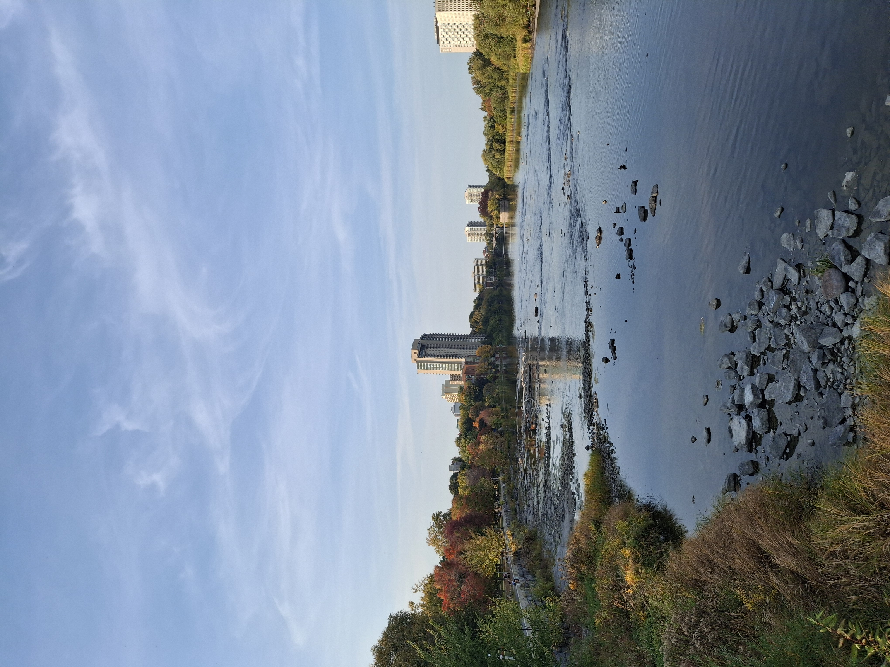

Home
Research
Talks & Events
Teaching
Videos

Talks & Events
Upcoming
Arizona Winter School
2026: Computational Aspects of Arithmetic Geometry and Cryptography
Past
The Roots of Commutative Algebra in Algebraic Number Theory, November 2023, 4th Algebra Workshop.
Class Number on Quadratic Fields, November 2023, 13th Bahar Matematik Buluşması, Yeditepe University
Mathematical Olympiads
Coordinator,
28th Junior Balkan Mathematical Olympiad
, July 2024, Antalya, Turkey
Coordinator, Boğaziçi University Mathematical Olympiads, May 2024, Boğaziçi University